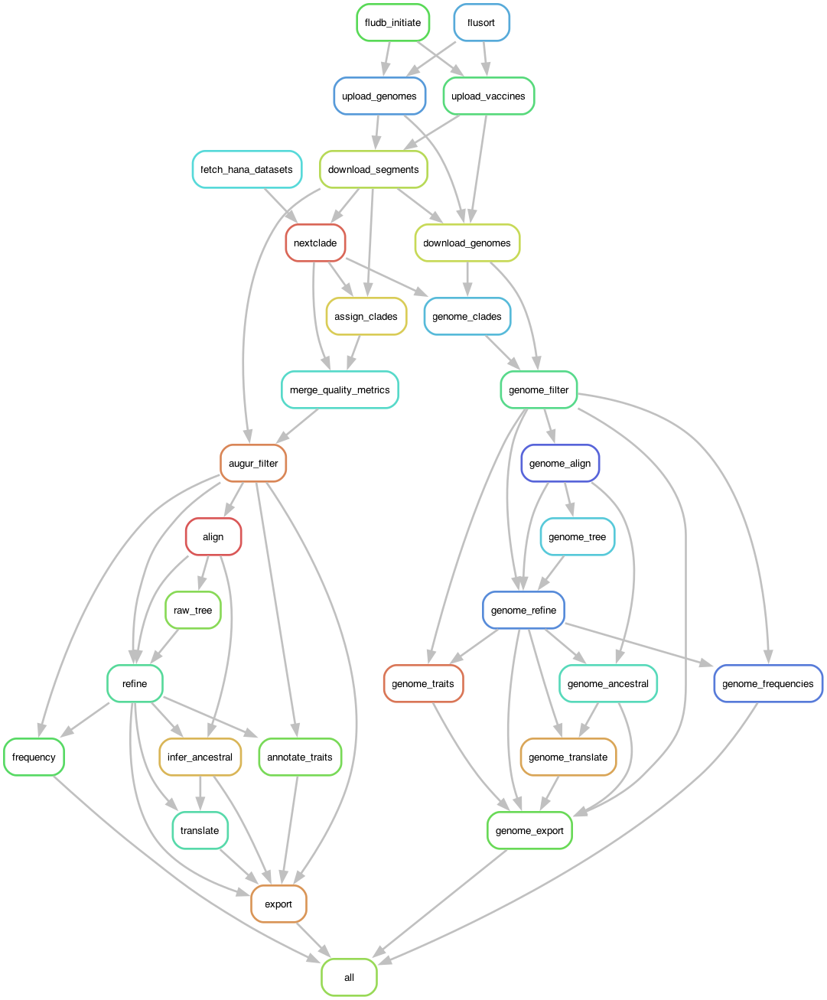

flowchart LR
A[Install Dependecies] --> B[Clone the repository]
B --> C[Supply 3 files]
C --> D[Enter Nextstrain shell]
D --> E[Dry run]
E --> F[Run Snakemake]
F --> G[View in Auspice]
Part 1: Downloading dependencies, building your environment, and running the tutorial dataset
2026-08-09
Note
This tutorial is optimized to run on machines running MacOS. Users who desire to run this pipeline on Windows must refer to the WSL installation documentation provided by Nextstrain.
Warning
A little bit of systems and linux terminal navigation knowledge is expected before starting this tutorial.
By the end of this tutorial, you will:
The tutorial uses 20 samples per subtype and the same Snakemake workflow used for a normal production build.
flowchart LR
A[Install Dependecies] --> B[Clone the repository]
B --> C[Supply 3 files]
C --> D[Enter Nextstrain shell]
D --> E[Dry run]
E --> F[Run Snakemake]
F --> G[View in Auspice]
vaccines.fasta - (see tutorial: add vaccine strains from GISAID)sequences.fasta – sequences from the Johns Hopkins Hospital, manually concatenated runsmetadata.txt – metadata with one line per unique sample ID (exclusing the segment) and associated metadataNote
For this tutorial, all three files are supplied in the tutorial folder
Warning
You must run every command from the repository’s top-level nextstrain/ directory.
You need:
The workflow downloads current Nextclade datasets during the run.
If the command cannot connect, reopen Docker Desktop and wait for startup to finish.
nextstrain repository folder.vaccines.fasta is not distributed with the tutorial because GISAID data cannot be openly shared.
Using your own authorized GISAID access:
tutorial/vaccines.fasta.Header requirements are documented in the vaccine tutorial.
The workflow can run without vaccine references, but the expected file must still exist:
An empty file produces the clinical tutorial builds without adding vaccine strains.
Confirm all three inputs:
Install the Nextstrain CLI using the official guide, then check that the Docker runtime is supported:
You should see seomthing like this
❯ nextstrain check-setup
Checking for newer versions of Nextstrain CLI…
Nextstrain CLI is up to date!
Testing your setup…
# Checking docker…
✔ yes: docker is installed
✔ yes: docker run works
✔ yes: containers have access to >2 GiB of memory (limit is 7.7 GiB)
✔ yes: image is new enough for this CLI version
✔ yes: Rosetta 2 is enabled for faster execution (optional)
# docker is supportedDocker Desktop must remain open while you use Nextstrain.
From the repository root:
Look for:
Then confirm Snakemake is available:
Keep this shell open for the remaining steps.
Perform a dry run inside the Nextstrain shell:
A dry run:
Resolve any missing-file error before continuing.
Inside the Nextstrain shell, run:
snakemake starts the workflow.--cores 8 allows up to eight CPU cores. Scale as needed--configfile config/tutorial.yaml selects tutorial inputs instead of source/ inputs.Note
The tutorial produces all 24 segment builds and three whole-genome builds. It uses the same workflow as a normal production run, but reads its starting files from this tutorial/ directory.
flowchart LR
A[classify segments] --> B[organize]
B --> C[call clades]
C --> D[filter]
D --> E[align]
E --> F[build, refine, annotate trees]
F --> G[Export Auspice JSON]
Warning
Do not close the terminal or stop Docker during the build.
The Snakemake rules for the segment and genome nextstrain builds are as follows:
To generally learn more about Snakemake refer to https://snakemake.github.io/

simplified rulegraph
When the workflow finishes, inspect:
Each subtype directory contains:
No red error message at the end means Snakemake completed successfully.
Example for the H1N1 HA build:
Reload your web browser and repeat with any segment or genome build you want to explore.
After correcting the cause of an interruption, rerun:
Snakemake reuses completed outputs and continues unfinished work.
Common checks:
nextstrain shell .?tutorial/vaccines.fasta exist?Both modes use the same downstream locations:
Use a fresh checkout or a clean workspace when switching modes.
To archive and clean an existing build:
This command removes build outputs after archiving them. Review the main README before using it.
Then open auspice.us and load a matching pair of JSON files from auspice/<subtype>/.
The tutorial is reproducible when four conditions are true:
nextstrain shell ..config/tutorial.yaml is selected.Start with a dry run, then let Snakemake build all 27 influenza views.
Pekosz Lab Nextstrain | H1N1 · H3N2 · B/Victoria Builds
{kind=link}